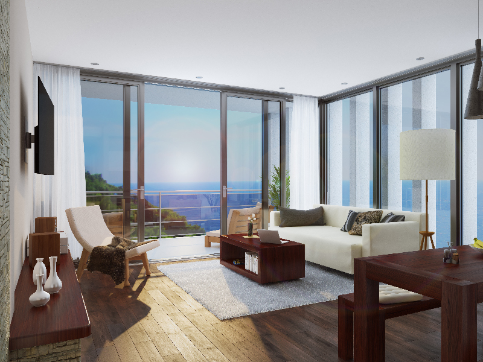

portfolio

apartement – living room

barclay clawfoot bathtub
Welcome! I'm Jakob Starick, an upcoming 3D artist currently located in Berlin, Germany. Creativity has been my driving passion since my first years. While other children wanted to be policemen and doctors, I wanted to become an author. While the direction itself changed, the will to create worlds, tell stories and inspire people with my own hands' work has stayed a constant. When I first delved into 3D art in 2011, I knew this was the one thing I want to do for the rest of my life.
I combine a wide range of interests, ranging from technical to artistical topics. My work is the synthesis of all my passion, my technical background, my sense of art and the experiences I had the great joy to make so far. I am always willing to learn, to broaden my horizon and to find myself as a part of new, interesting projects.
Jakob Starick
Gehsener Str. 79
12555 Berlin